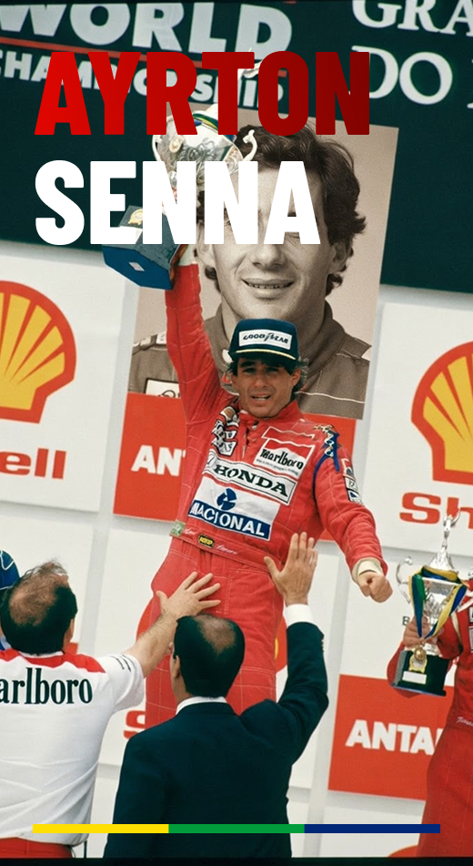

Mostrar a F1 do meu jeito
Reunir história, pessoas e emoção da Fórmula 1 em um só lugar, de forma simples e interativa.
O APEX F1 reúne a história da categoria, as lendas do automobilismo e um quiz interativo, com um olhar especial para Ayrton Senna.
Da largada à bandeirada.
Reunir história, pessoas e emoção da Fórmula 1 em um só lugar, de forma simples e interativa.
Login e cadastro, conteúdo sobre a F1, homenagem ao Senna, um quiz e um painel com o seu desempenho.
Compromisso, dedicação e fé em cada volta: a história dele guia o projeto de ponta a ponta.
Pilotos que mudaram a categoria. E um que mudou a minha forma de ver a vida.

São Paulo, 1960 · Imola, 1994
Tricampeão mundial (1988, 1990 e 1991), Senna é lembrado como um dos maiores pilotos de todos os tempos e como símbolo de determinação para o Brasil.
Minha admiração pelo Ayrton Senna vai muito além dos números, das vitórias e dos títulos. O que me encanta nele é a maneira como sua história continua viva, mesmo depois de tantas décadas. Existe algo especial em ver como um brasileiro conseguiu marcar a história de um esporte tão grandioso e fazer tanta gente sentir orgulho de suas conquistas. Para mim, Senna representa aquela vontade de ir além, de buscar algo maior e de colocar paixão naquilo que fazemos. Escolher a Fórmula 1 para este projeto também é uma forma de me aproximar de uma história que admiro tanto. E, entre tantos nomes que fizeram história nas pistas, Senna sempre terá um lugar especial para mim.
“Ou você faz uma coisa bem-feita ou não faz.”
O grande pioneiro dos anos 1950.
O “Professor” e maior rival de Senna.
Voltou às pistas após o acidente de 1976.
Recordista de títulos por mais de uma década.
Um panorama rápido do esporte: como tudo começou, quem corre hoje e o que torna a categoria única.
Primeira temporada do Campeonato Mundial de Pilotos, com a corrida de abertura em Silverstone.
As equipes passam a disputar também o título de construtores.
A morte de Senna marca a história e impulsiona grandes mudanças de segurança.
Chegam os motores v6 turbo híbrido, unindo desempenho e tecnologia.
🇦🇹 — 2005
Conhecida por sua competitividade e pelos títulos de Sebastian Vettel e Max Verstappen. Pilotos: Max Verstappen e Isack Hadjar.
🇮🇹 — 1950
A equipe mais tradicional da F1, símbolo de paixão e história. Pilotos: Charles Leclerc e Lewis Hamilton.
🇬🇧 — 1966
Uma das maiores campeãs da categoria, eternizada também pela era de Ayrton Senna. Pilotos: Lando Norris e Oscar Piastri.
🇩🇪 — 1954/2010
Dominou a era híbrida e conquistou vários títulos com Lewis Hamilton. Pilotos: George Russel e Kimi Antonelli.
🇬🇧 — 2021
Projeto ambicioso, com grandes investimentos e foco em desenvolvimento. Pilotos: Fernando Alonso e Lance Stroll.
🇫🇷 — 2021
Representa a tradição da Renault e do automobilismo francês. Pilotos: Pierre Gasly e Franco Colapinto.
🇬🇧 — 1977
Uma gigante histórica que busca recuperar seu lugar entre as melhores. Pilotos: Carlos Sainz e Alexander Albon.
🇮🇹 — 2006
Equipe conhecida por revelar jovens talentos para a Red Bull. Pilotos: Liam Lawson e Arvid Lindblad.
🇩🇪 — 2026
Estreante como equipe de fábrica, assumiu a estrutura da Sauber. Pilotos: Nick Hülkenberg e Gabriel Bortoleto.
🇺🇸 — 2016
Equipe americana que compete com uma estrutura enxuta. Pilotos: Esteban Ocon e Oliver Bearman. Chegando Rafael Câmara em 2027!! BORA BR!!
🇺🇸 — 2026
Nova equipe americana que marca a expansão do grid. Pilotos: Sergio Pérez e Valtteri Bottas.
🏁 — A confirmar
Rumores indicam uma possível nova equipe no grid. Ainda sem confirmação oficial.